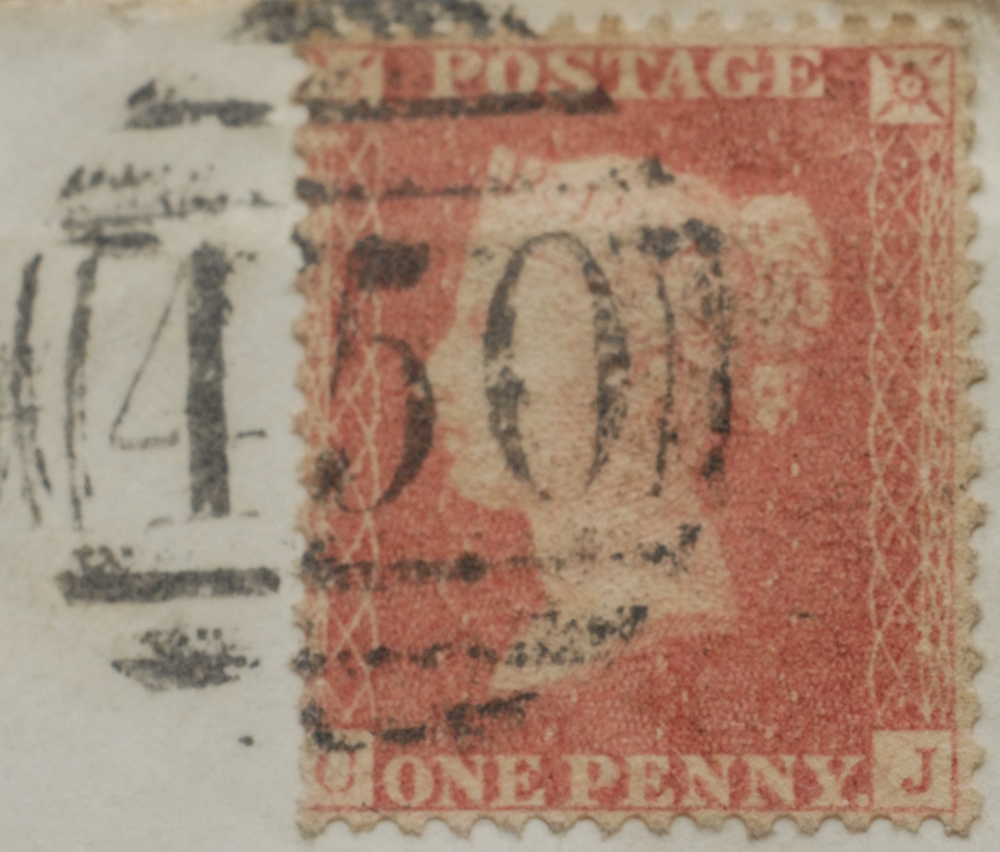
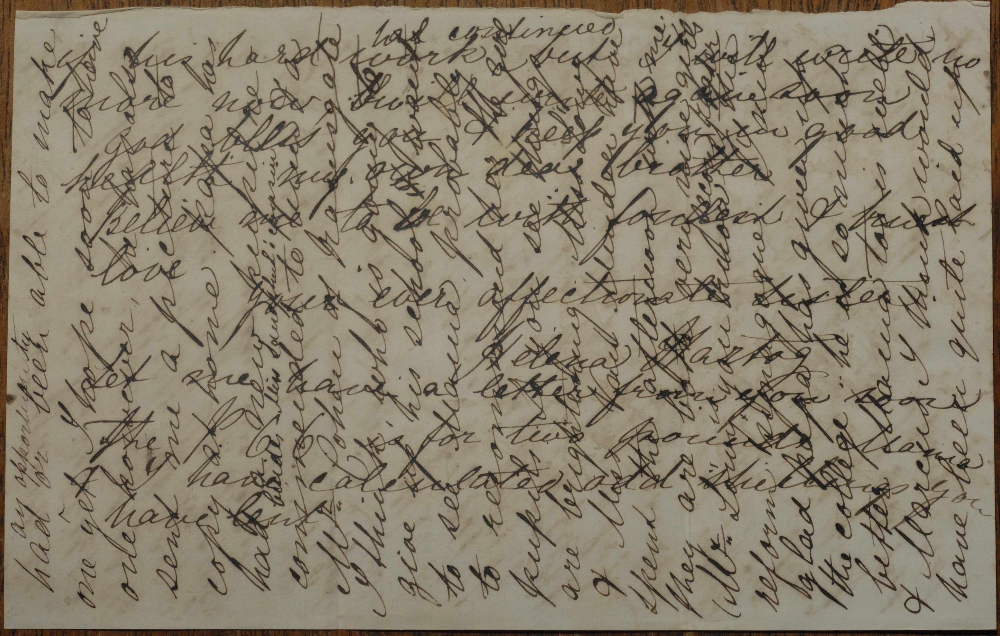

My passionate interest in philately for over 60 years has recently led me to a remarkable discovery. Its brief story is as follows: As a result of a home clearance some 40 years ago, I was given a bundle of 82 envelopes with worthless Victorian penny red stamps on them. Each envelope contained one or more letters which i had not had the time to examine. It has now emerged that their author was the first ever Jewish Senior Wrangler at Cambridge University: Numa Edward Hartog. Tragically he died of smallpox at the age of 25. His letters give a remarkable insight into the life and times of mid-Victorian England.


Watch this space for further developments!